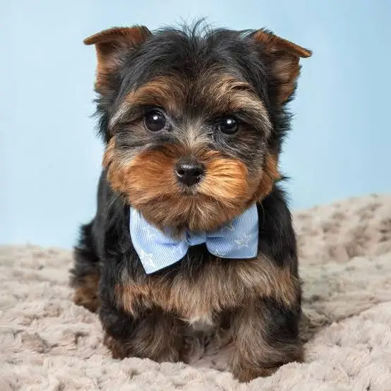
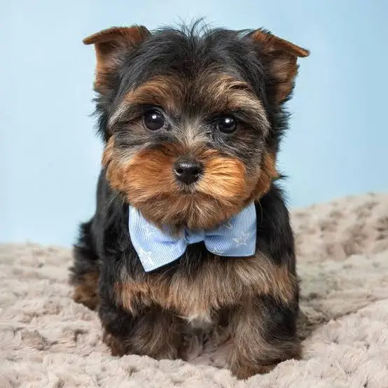

ЕНЦИКЛОПЕДІЯ
Чому важливо знати породу собаки?
Кожна порода має унікальний характер, потреби в активності, особливості догляду та схильність до певних захворювань.
На сайті вже 20 популярних порід — від сімейних гігантів до маленьких компаньйонів.
400+
Порід у світі
10 000+
Щасливих господарів


 
